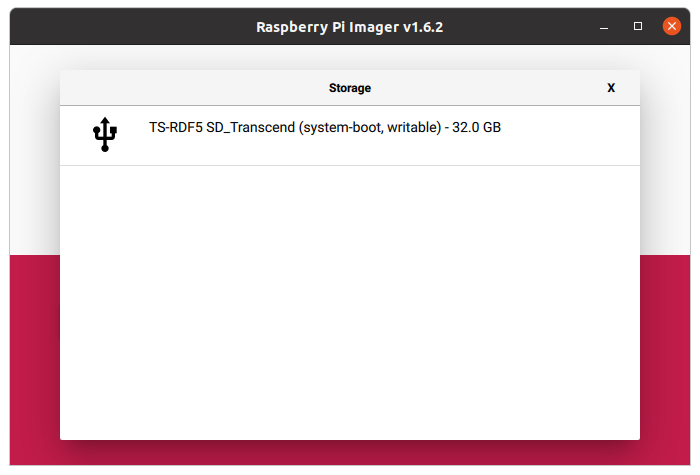

<!DOCTYPE html>
<html lang="jp">
  <head>
    <meta charset="utf-8">
    <title>Linuxのインストール（Raspberry Pi）</title>
    <link rel="stylesheet" href="style.css">
  </head>
  <body>
  <div class="main">
    <h1>Linuxのインストール（Raspberry Pi）</h1>

    <p>
      Linuxはオープンソースのオペレーティングシステム（OS）です。
    </p>
    <p>
      Raspberry PiではUbuntu Server 20.04 LTSを使います。
    </p>
    <br>

    <ul>
      <li><a href="#Raspberry Pi Imagerのインストール">Raspberry Pi Imagerのインストール</a></li>
      <li><a href="#ディスクイメージの書き込み">ディスクイメージの書き込み</a></li>
      <li><a href="#Raspberry Piの設定">Raspberry Piの設定</a></li>
      <li><a href="#ホスト名の変更">ホスト名の変更</a></li>
      <li><a href="#ユーザーの追加">ユーザーの追加</a></li>
      <li><a href="#ネットワークの設定">ネットワークの設定</a></li>
      <li><a href="#ssh接続">ssh接続</a></li>
    </ul>

    <section>

    <h3 id="Raspberry Pi Imagerのインストール">Raspberry Pi Imagerのインストール</h3>
    <p>公式のディスクイメージ書き込みツールRaspberry Pi Imager
      を使ってSDカードにディスクイメージを書き込みます。
    </p>
    <p>
      詳しくは
      <a href=https://www.raspberrypi.org/software/>公式HP</a>
      を参照してください。
    </p>
    <p>
      以下のコマンドを実行してRaspberry Pi Imagerを
      インストールする。
    </p>
    <ul>
      <pre>$ snap install rpi-imager</pre>
    </ul>
    <div style="text-align:center">
      
    </div>
    <br>

    <h3 id="ディスクイメージの書き込み">ディスクイメージの書き込み</h3>
    <p>Raspberry Pi Imagerを起動する。</p>
    <div style="text-align:center">
      
    </div>

    <p>［CHOOSE OS］ボタンをクリックする。</p>
    <div style="text-align:center">
      
    </div>

    <p>［Other general purpose OS］を選択する。</p>
    <div style="text-align:center">
      
    </div>

    <p>［Ubuntu］を選択する。</p>
    <div style="text-align:center">
      
    </div>

    <p>［Ubuntu Server 20.04.2 LTS 64bit］を選択する。</p>
    <div style="text-align:center">
      
    </div>

    <p>SDカードを挿入する。</p>
    <p>[CHOOSE STORAGE]ボタンをクリックする。</p>
    <div style="text-align:center">
      
    </div>

    <p>挿入したSDカードを選択する。</p>
    <div style="text-align:center">
      
    </div>

    <p>[WRITE]ボタンをクリックする。</p>
    <div style="text-align:center">
      
    </div>

    <p>[YES]ボタンをクリックする。</p>
    <div style="text-align:center">
      
    </div>

    <p>書き込み中。</p>
    <div style="text-align:center">
      
    </div>

    <p>[CONTINUE]ボタンをクリックする。</p>
    <div style="text-align:center">
      
    </div>

    <p>Raspberry Pi Imagerを閉じる。</p>

    <p>SDカードをUnmountして取り出す。</p>
    <br>

    <h3 id="Raspberry Piの設定">Raspberry Piの設定</h3>
    <p>
      Raspberry Piにキーボード、マウス、モニターを
      接続してください。
      （ここではLANケーブルは接続しない）
    </p>
    <p>SDカードをRaspberry Piに挿入して電源を入れます。</p>
    <p>ユーザー名はubuntu、パスワードはubuntuです。</p>
    <p>
      パスワードを変更するよう要求されるので、
      hirate2020と設定してください。
    </p>
    <p>※パスワードは表示されません</p>
    <ul>
      <pre>Ubuntu 20.04.2 LTS ubuntu tty1

ubuntu login: ubuntu
Password: ubuntu
You are required to change your password immediately (administrator enforced)
Changing password for ubuntu.
Current password: ubuntu
New password: hirate2020
Retype new password: hirate2020
Welcome to Ubuntu 20.04.2 LTS (GNU/Linux 5.4.0-1028-raspi aarch64)
・・・
ubuntu@ubuntu:~$</pre>
    </ul>
    <br>

    <h3 id="ホスト名の変更">ホスト名の変更</h3>
    <p>現在の設定値を確認します。</p>
    <ul>
      <pre>ubuntu@ubuntu:~$ hostnamectl
   Static hostname: ubuntu
         Icon name: computer
        Machine ID: 43a374fd544d486c85b565c2a9c5a133
           Boot ID: 1fe93654c2384ec68e119ba1808d1216
  Operating System: Ubuntu 20.04.2 LTS
            Kernel: Linux 5.4.0-1028-raspi
      Architecture: arm64</pre>
    </ul>

    <p>
      ホスト名をubuntuからzumo08に変更します。
      番号は、各自が使っているZumoの番号です。
    </p>
    <ul>
      <pre>ubuntu@ubuntu:~$ hostnamectl set-hostname zumo08
==== AUTHENTICATING FOR org.freedesktop.hostname1.set-static-hostname ===
Authentication is required to set the statically configured local host name, as well as the pretty host name.
Authenticating as: Ubuntu (ubuntu)
Password: 
==== AUTHENTICATION COMPLETE ===</pre>
    </ul>

    <p>ホスト名が変更できているか確認します。</p>
    <ul>
      <pre>ubuntu@ubuntu:~$ hostnamectl
   Static hostname: zumo08
         Icon name: computer
        Machine ID: 43a374fd544d486c85b565c2a9c5a133
           Boot ID: 1fe93654c2384ec68e119ba1808d1216
  Operating System: Ubuntu 20.04.2 LTS
            Kernel: Linux 5.4.0-1028-raspi
      Architecture: arm64</pre>
    </ul>

    <p>再起動します。</p>
    <ul>
      <pre>ubuntu@ubuntu:~$ sudo shutdown -r now</pre>
    </ul>

    <p>ホスト名が変更していることを確認してください。</p>
    <ul>
      <pre>ubuntu@zumo08:~$</pre>
    </ul>
    <br>

    <h3 id="ユーザーの追加">ユーザーの追加</h3>
    <p>piというユーザーを追加します。</p>
    <ul>
      <pre>ubuntu@zumo08:~$ sudo adduser pi
Adding user `pi' ...
Adding new group `pi' (1001) ...
Adding new user `pi' (1001) with group `pi' ...
Creating home directory `/home/pi' ...
Copying files from `/etc/skel' ...
New password: hirate2020
Retype new password: hirate2020
passwd: password updated successfully
Changing the user information for pi
Enter the new value, or press ENTER for the default
	Full Name []: press [Enter]key
	Room Number []: press [Enter]key
	Work Phone []: press [Enter]key
	Home Phone []: press [Enter]key
	Other []: press [Enter]key
Is the information correct? [Y/n] y</pre>
    </ul>

    <p>piをsudoグループに追加します。</p>
    <ul>
      <pre>ubuntu@zumo08:~$ sudo adduser pi sudo
Adding user `pi' to group `sudo' ...
Adding user pi to group sudo
Done.</pre>
    </ul>

    <p>ubuntuとrootをロックします。</p>
    <ul>
      <pre>ubuntu@zumo08:~$ sudo passwd -d ubuntu
ubuntu@zumo08:~$ sudo passwd -l ubuntu
ubuntu@zumo08:~$ sudo passwd -l root</pre>
    </ul>

    <p>この段階で、ログインできるユーザーはpiのみとなります。</p>
    <p>一度ログアウトします。</p>
    <ul>
      <pre>ubuntu@zumo08:~$ exit</pre>
    </ul>

    <p>piでログインしてください。</p>
    <ul>
      <pre>pi@zumo08:~$</pre>
    </ul>
    <br>

    <h3 id="ネットワークの設定">ネットワークの設定</h3>
    <p>現在の設定を確認する。</p>
    <ul>
      <pre>$ cat /etc/netplan/50-cloud-init.yaml 
# This file is generated from information provided by the datasource.  Changes
# to it will not persist across an instance reboot.  To disable cloud-init's
# network configuration capabilities, write a file
# /etc/cloud/cloud.cfg.d/99-disable-network-config.cfg with the following:
# network: {config: disabled}
network:
    ethernets:
        eth0:
            dhcp4: true
            optional: true
    version: 2</pre>
    </ul>

    <p>設定ファイルをコピーする。</p>
    <p>※ _は［Shift］＋［-］で入力</p>
    <ul>
      <pre>$ sudo cp /etc/netplan/50-cloud-init.yaml /etc/netplan/99_config.yaml</pre>
    </ul>

    <p>コピーした設定ファイルを編集する。</p>
    <p>※ [は［@］、]は［[］、:は［Shift］＋［;］</p>
    <ul>
      <pre>$ sudo nano /etc/netplan/99_config.yaml</pre>
    </ul>
    <ul>
      <pre># This file is generated from information provided by the datasource.  Changes
# to it will not persist across an instance reboot.  To disable cloud-init's
# network configuration capabilities, write a file
# /etc/cloud/cloud.cfg.d/99-disable-network-config.cfg with the following:
# network: {config: disabled}
network:
    ethernets:
        eth0:
            dhcp4: false
            optional: true
            addresses: [192.168.1.249/24]
            gateway4: 192.168.1.1
            nameservers:
                addresses: [192.168.1.1]
                search: []
    version: 2</pre>
    </ul>

    <p>設定を反映させる。</p>
    <ul>
      <pre>$ sudo netplan apply</pre>
    </ul>

    <p>IPアドレスを確認する。</p>
    <ul>
      <pre>$ ip a
1: lo: <LOOPBACK,UP,LOWER_UP> mtu 65536 qdisc noqueue state UNKNOWN group default qlen 1000
    link/loopback 00:00:00:00:00:00 brd 00:00:00:00:00:00
    inet 127.0.0.1/8 scope host lo
       valid_lft forever preferred_lft forever
    inet6 ::1/128 scope host 
       valid_lft forever preferred_lft forever
2: eth0: <BROADCAST,MULTICAST,UP,LOWER_UP> mtu 1500 qdisc mq state UP group default qlen 1000
    link/ether dc:a6:32:e4:e9:4b brd ff:ff:ff:ff:ff:ff
    inet 192.168.1.241/24 brd 192.168.1.255 scope global eth0
       valid_lft forever preferred_lft forever
    inet6 fe80::dea6:32ff:fee4:e94b/64 scope link 
       valid_lft forever preferred_lft forever
3: wlan0: <BROADCAST,MULTICAST> mtu 1500 qdisc noop state DOWN group default qlen 1000
    link/ether dc:a6:32:e4:e9:4c brd ff:ff:ff:ff:ff:ff</pre>
    </ul>

    <p>ネットワークに接続されているか確認する。</p>
    <ul>
      <pre>$ ping 192.168.1.249
PING 192.168.1.249 (192.168.1.249) 56(84) バイトのデータ
64 バイト応答 送信元 192.168.1.249: icmp_seq=1 ttl=64 時間=1.14ミリ秒
64 バイト応答 送信元 192.168.1.249: icmp_seq=2 ttl=64 時間=0.502ミリ秒
64 バイト応答 送信元 192.168.1.249: icmp_seq=3 ttl=64 時間=0.502ミリ秒
64 バイト応答 送信元 192.168.1.249: icmp_seq=4 ttl=64 時間=0.486ミリ秒
64 バイト応答 送信元 192.168.1.249: icmp_seq=5 ttl=64 時間=0.442ミリ秒
64 バイト応答 送信元 192.168.1.249: icmp_seq=6 ttl=64 時間=0.559ミリ秒
64 バイト応答 送信元 192.168.1.249: icmp_seq=7 ttl=64 時間=0.560ミリ秒
64 バイト応答 送信元 192.168.1.249: icmp_seq=8 ttl=64 時間=0.514ミリ秒
64 バイト応答 送信元 192.168.1.249: icmp_seq=9 ttl=64 時間=0.528ミリ秒
^C
--- 192.168.1.249 ping 統計 ---
送信パケット数 9, 受信パケット数 9, パケット損失 0%, 時間 8160ミリ秒
rtt 最小/平均/最大/mdev = 0.442/0.581/1.144/0.201ミリ秒
</pre>
    </ul>

    <br>


    <h3 id="ssh接続">ssh接続</h3>
    <p>
      SDカードをRaspberry Piに挿入して電源を入れます。
      ウィザードに従って設定してください。
    </p>
    <p>今回使用するRaspberry Piは次のように設定してあります。</p>
    <ol>
      <li>Language: English</li>
      <br>
      <li>Keyboard Layout: English(US)</li>
      <br>
      <li>Time Zone: Tokyo</li>
    </ol>
    <p>
      Langageは変更しないでください。
      Keyboard Layoutは使用するキーボードに合わせて変更してください。
      Time Zoneはタイ時間に合わせてください。
    </p>

  </div>
  </body>
</html>
